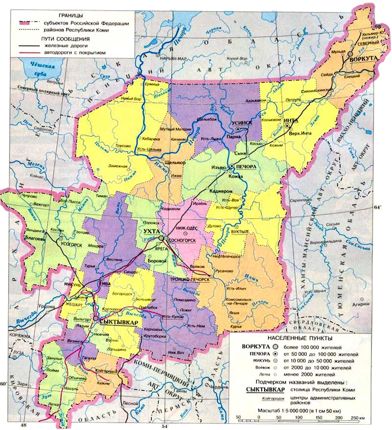

Республика Коми расположена на северо-востоке европейской части Российской Федерации в пределах территории , охватывающей Печорскую низменность и Мезенско-Вычегодскую равнину, Средний и Южный Тиман, западные склоны Уральских гор в границах Северного, Приполярного и Полярного Урала.Республика простирается от Северных Увалов на юге до Пай-Хоя на северо-востоке. От Пинего-Мезенского междуречья на западе до водораздела рек Печоры и Оби, проходящего по Уральскому хребту на востоке.
Площадь Коми Республики - 416,8 тыс. кв. км.(2,4% площади России). Территория Республики имеет наибольшую протяженность с юго-запада на северо-восток - 1275 км, с севера на юг - 785 км, с запада на восток - 685 км. Граничит на Севере и Западе с Архангельской областью и входящим в нее Ненецким автономным округом, на Юго-Западе – с Кировской областью, на Востоке – с Ямало-Ненецким и Ханты-Мансийским автономными округами Тюменской области, на Юго-Востоке – со Свердловской областью, на Юге – с Пермским краем.

В административном отношении Республика Коми делится на 20 административно-территориальныч единиц: 8 городов республиканского значения с подчинёнными им территориями (Сыктывкар, Воркута, Вуктыл, Инта, Печора, Сосногорск, Усинск, Ухта) и 12 районов (Ижемский, Княжпогостский, Койгородский, Корткеросский, Прилузский, Сыктывдинский, Сысольский, Троицко-Печорский, Удорский, Усть-Вымский, Усть-Куломский, Усть-Цилемский). На 1 января 2017 года в Республике Коми насчитывалось 184 муниципальных образований — 6 городских округов, 14 муниципальных районов, 14 городских поселений и 151 сельское поселение. Численность жителей на 2017 г. составила 850,5 тыс. человек, в том числе: городское население - 663,4 тыс человек, сельское - 187,1 тыс человек. Государственные языки - коми и русский. Столицей является город Сыктывкар (256 тыс. чел.)